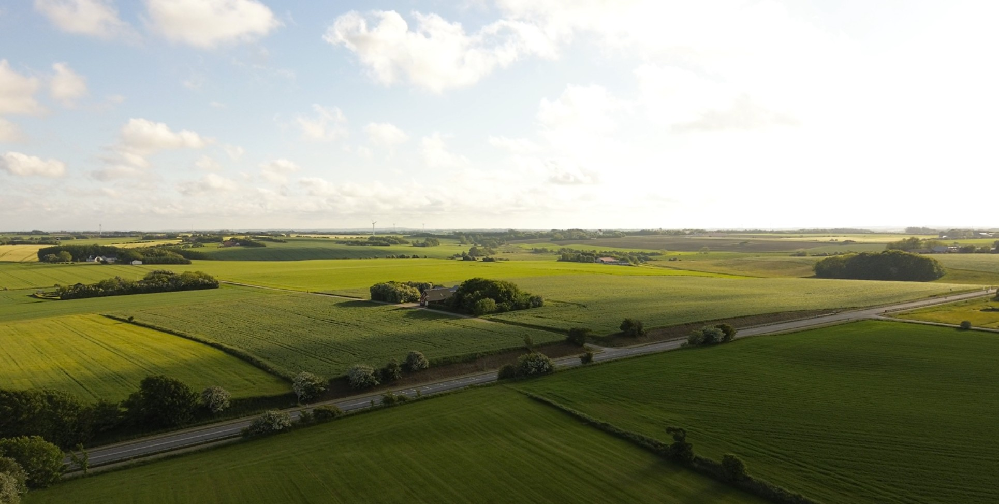

Owners
Direct involvement from bid to closeout
The owners handle estimates, project decisions, and the relationships that define the business. That should feel like accountability, not a staffing limitation.
About the company
Allstate Permit Services is built around direct ownership involvement, practical judgment, and the kind of follow-through that keeps long-term clients coming back.

The point of the site
Show clients and landowners the real value: steady leadership, industry relationships, and a process that is careful without becoming slow.
APS grew by doing the unglamorous parts well: staying organized, communicating clearly, and earning the confidence of project teams that need work completed the right way. The business was never supposed to feel oversized or corporate. It was supposed to feel dependable.
That is the story the site should tell. Not hype. Not buzzwords. Just a long record of solving permitting and land problems with enough professionalism that clients keep coming back.
In this field, people care less about slogans and more about who answers the phone, who owns the problem, and whether the work holds up when things get hard. APS should look like the kind of company that can handle that pressure without drama.
This is a small-company advantage. Clients get the decision-makers, not a handoff chain. That should be visible everywhere on the site.
The owners handle estimates, project decisions, and the relationships that define the business. That should feel like accountability, not a staffing limitation.
APS relies on carefully chosen contractors when field execution is needed. The site should explain that this is intentional: a lean team backed by people the company already trusts.
The best service companies make complicated work feel manageable. APS should present a simple flow that makes clients confident before the first call.
Scope, location, stakeholders, timing, and the realities of the route or parcel plan are reviewed before execution starts.
APS talks with landowners, agencies, and client teams in a way that keeps the project moving while lowering friction.
Deliverables, records, and project notes stay organized so the client can work from a clean, reliable process.
These are the ideas that should guide the copy and the visual tone across the site.
That mindset matters. It protects relationships and helps projects move without unnecessary conflict.
Ownership should be visible. That makes the business feel more trustworthy than a generic subcontractor site.
The best proof of quality is long-term business with people who already know what good looks like.
This page should make it obvious that APS is small on purpose, serious about the work, and trusted by the people who keep hiring them.